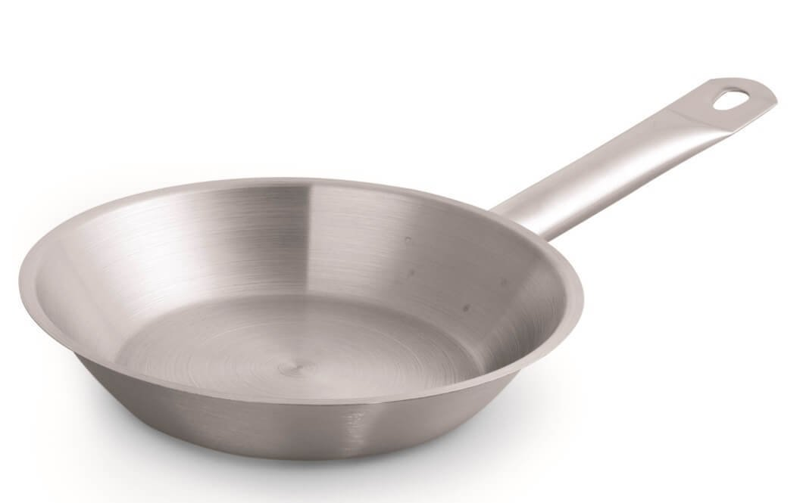

Welcome to keptuvės
Keptuvės - Krinona
2020.10.29 08:40Prekių pristatymas Grąžinimas ir garantija Atsiskaitymo būdai Parduotuvių tinklas Susisiekime Reikia patarimo? +370 655 94094 Prisijungti / Registruotis Mėgstamos prekės 0
jūsų pirkinių krepšelis yra tuščias
Kaina: Peržiūrėti savo krepšelį Buitinė technika Namų technika Smulki virtuvės įranga Grožis ir sveikata Patalpų šildymas, vėdinimasDulkių siurbliai ir jų priedai
Robotai siurbliai Pakraunami dulkių siurbliai Plaunantys dulkių siurbliai Cikloniniai dulkių siurbliai Dulkių siurbliai su vandens filtru Dulkių siurbliai su dulkių maišeliais Priedai dulkių siurbliamsDrabužių lyginimas
Elektriniai lygintuvai Lyginimo sistemos Lygintuvai su boileriais Lyginimo lentos Prietaisai, lyginantys karštais garais Kelioniniai lygintuvai Lyginimo presai Priedai lygintuvamsŠluotos
Prietaisai, valantys karštais garais
Karštais garais valančių prietaisų priedaiPūkų surinkėjai
Langų valymo prietaisai
Kita
Televizoriai ir audio technika
Kokteilinės
Sulčiaspaudės
Trintuvai / blenderiai
Maisto džiovyklės
Griliai
Kamado griliai Kamado grilių priedai El.griliai Dujiniai griliaiMikseriai / Plaktuvai
Maisto kombainai
Daugiafunkciniai maisto kombainai Mini kombainaiMėsmalės
Tarkavimo mašinos, sunktuvai
Elektrinės tarkavimo mašinos Sunktuvai tarkiamsVirduliai
Elektriniai virduliai Neelektriniai virduliai Arbatos virimo aparataiKavamalės
Pieno putų plaktuvai
Elektriniai keptuvai
Sumuštinių keptuvės Lietinių blynų keptuvės Čirvinių blynų keptuvės Elektrinės vaflių keptuvės Keksų keptuvėsDaugiafunkciniai puodai
Elektrinės krosnelės
Skrudintuvai
Gruzdintuvės
Kaitlentės
Maisto svarstyklės
Kita virtuvės įranga
Ledų gaminimo aparatai Pieno šaldytuvai Elektrinės kiaušinių viryklės Spragėsių gaminimo aparatai (POPCORN) Fondiu DuonkepėsVakuumavimo aparatai
Masažuokliai, masažinės vonelės
Nugaros masažuokliai - sėdynės Universalūs masažuokliaiKūno šildytuvai
Vonios svarstyklės
Elektra šildomi paklotai
Oro šildytuvai
Oro drėkintuvai
Ventiliatoriai
Avalynės džiovintuvai
Namų apyvoka Puodai, keptuvės, skardos, kepimo formos Virtuvės ir stalo reikmenys Termosai, gertuvės Laisvalaikio prekės Alkotesteriai AliejaiKeptuvės
Indukcinės keptuvės Neindukcinės keptuvės Ketaus (špižinės) keptuvėsPuodai
Indukciniai puodai Neindukciniai puodai Greitpuodžiai Puodų rinkiniai Puodų priedaiKepimo indai, formos
Kepimo indai Kepimo formos Sausainių formelės Silikoninės formelės saldainiamsDangčiai
Ledų formelės ir priedai
Peiliai
Virtuviniai peiliai Peilių rinkiniai Peilių dėklai, stovai Peilių galąstuvaiPjaustymo lentelės
Maisto pjaustyklės
Tarkos
Mentelės, teptukai, raišteliai
Įrankiai
Česnako spaustukai Įrankiai kauliukams/sėkloms išimti Kamščiatraukiai Kiaurasamčiai Mentelės Skardinių atidarytuvai Skustukai Žnyplės maistui Stalo ĮrankiaiIndai maisto laikymui ir ruošimui
Indai maisto laikymui Salotinės / džiovintuvai Prieskonių malūnėliai PrieskoninėsPadėklai, kilimėliai, pirštinės
Silikoniniai padėkliukai, kilimėliai Padėklai, tortinės Silikoninės pirštinėsKiti reikmenys
Laikmačiai Maisto termometrai Karamelizatoriai ir jų priedai Kaitlentės gramdikliai Konditeriniai maišeliai, švirkštai Šiaudeliai KitaTermosai
Termosai skysčiams Maistiniai termosaiTermosiniai kelioniniai puodeliai
Gertuvės
Paspirtukai
Dviračiai
Vaikiškos mašinėlės
Šalmai
Akiniai nuo saulės
Uodų repelentai
Dviračių priedai
Šašlykinės
Alkotesteriai
Aliejus maistui
Kavos aparatai Kavos aparatai Kiti aparatai Kavos aparatų priežiūra, priedaiAutomatiniai
Kapsuliniai
Pusiau automatiniai
Verslui (Vending)
Profesionalūs
Filtrinės kavavirės
Espreso virimo aparatai
Kavos, arbatos nuspaudėjai
Turkiškos kavos virimo aparatai
Kavos aparatų filtrai
Kiti priedai
Nukalkinimo skystis
Valymo tabletės
Arbata, kava ir kavos produktai Kava Kavos priedai ArbataKava pupelėmis
Malta kava
Kavos kapsulės
Kavos pagalvėlės
Karštas šokoladas
Saldainiai
Šokolado barstikliai
Puodeliai, stiklinės
Vienkartiniai puodeliai
Sirupai
Kiti priedai
Arbata
Grožio prekės Plaukams Burnos higiena Prekės gyvūnams Frezos, dulkių nutraukėjai Papildomos priemonės Kvepalai Vyrams Vienkartinės prekėsElektros prietaisai
Barzdaskutės Formuotuvai, elektriniai suktukai Plaukų džiovintuvai Plaukų kirpimo mašinėlės Plaukų tiesintuvai Plaukų trimeriaiDantų balinimo priemonės
Elektriniai dantų šepetėliai
Irigatoriai
Gyvūnų kirpimo, kantavimo mašinėlės
Peiliukai, antgaliai gyvūnų kirpimo mašinėlėms
Šampūnai / kondicionieriai gyvūnams
Šukos, šepečiai gyvūnams
Frezos
Dezinfekavimui, sterilizavimui
Namams
Aromaterapinės žvakės Eteriniai aliejai Namų kvapaiBarzdaskutės
Plaukų kirpimo mašinėlės vyrams
Plaukų trimeriai
Vienkartinės pirštinės
Paspirtukai Namų apyvoka Puodai, keptuvės, skardos, kepimo formos Keptuvės Slėpti prekių filtrąKeptuvės
Į krepšelį Indukcinė keptuvė AMT Gastroguss, Ø 28 cm, 5 cm aukščio AMT 528-E-Z30-PL AMT-Gastroguss 74,50 € Yra sandėlyje Į krepšelį Indukcinė keptuvė troškinimui AMT Gastroguss, Ø 28 cm, 7 cm AMT 728-E-Z30-PL AMT-Gastroguss 76,90 € Yra sandėlyje Į krepšelį Keptuvė AMT Gastroguss, Ø 26 cm, 7 cm aukščio AMT 726-E-Z30-PL AMT-Gastroguss 50,40 € Yra sandėlyje Į krepšelį Keptuvė AMT Gastroguss, Ø 26 cm, 5 cm aukščio AMT 526-E-Z30-PL AMT-Gastroguss 48,40 € Yra sandėlyje Į krepšelį Indukcinė keptuvė AMT Gastroguss, Ø 32 cm, 5 cm aukščio AMT 532-E-Z30-PL AMT-Gastroguss 93,60 € Yra sandėlyje Į krepšelį Indukcinė keptuvė AMT Gastroguss, Ø 24 cm, 7 cm aukščio AMT 724-E-Z30-PL AMT-Gastroguss 70,00 € Yra sandėlyje Į krepšelį Keptuvė nuimama rankena AMT Gastroguss, Ø 28 cm, 7 cm aukščio AMT 728-E-Z20B AMT-Gastroguss 62,00 € Yra sandėlyje Į krepšelį Keptuvė nuimama rankena AMT Gastroguss, Ø 26 cm, 7 cm aukščio AMT 726-E-Z20B AMT-Gastroguss 59,00 € Yra sandėlyje Į krepšelį Indukcinė keptuvė nuimama rankena, AMT Gastroguss, Ø 26 cm, 5 cm aukščio AMT 526-E-Z20B AMT-Gastroguss 78,00 € Yra sandėlyje Į krepšelį Keptuvė AMT Gastroguss, Ø 26 cm, 5 cm aukščio AMT 526-E-Z4 AMT-Gastroguss 55,90 € Yra sandėlyje Į krepšelį Indukcinė keptuvė AMT Gastroguss, Ø 20 cm, 5 cm aukščio AMT 520-E-Z30-PL AMT-Gastroguss 63,30 € Yra sandėlyje Į krepšelį Keptuvė AMT Gastroguss, Ø 20 cm, 5 cm aukščio AMT 520-E-Z30-PL AMT-Gastroguss 39,80 € Yra sandėlyje Į krepšelį Keptuvė AMT Gastroguss, Ø 24 cm, 5 cm aukščio AMT 524-E-Z30-PL AMT-Gastroguss 45,80 € Yra sandėlyje Į krepšelį Keptuvė AMT Gastroguss, Ø 24 cm, 4 cm aukščio AMT 424-E-Z30-PL AMT-Gastroguss 44,30 € Yra sandėlyje Į krepšelį Indukcinė keptuvė AMT Gastroguss, Ø 26 cm, 5 cm aukščio AMT 526-E-Z30-PL AMT-Gastroguss 69,10 € Yra sandėlyje Į krepšelį Indukcinė keptuvė AMT Gastroguss, Ø 24 cm, 5 cm aukščio AMT 524-E-Z30-PL AMT-Gastroguss 66,90 € Yra sandėlyje Į krepšelį Keptuvė AMT Gastroguss, Ø 28 cm, 4 cm aukščio AMT 428-E-Z30-PL AMT-Gastroguss 49,60 € Yra sandėlyje Į krepšelį Keptuvė AMT Gastroguss Wok, Ø 28 cm, 11 cm aukščio AMT 1128S-E-Z30-PL AMT-Gastroguss 55,90 € Yra sandėlyje Ankstesnis 1 2 3 ... 7 KitasMaisto keptuvės
Keptuvė - išties universalus maisto ruošos įrankis, su kuriuo galite ne tik kepti, tačiau ir troškinti , skrudinti , ar net virti įvairius padažus . Renkantis keptuvę svarbu atkreipti dėmesį į jos ilgaamžiškumą bei tokias savybes, kaip saugus ir nelimpantis keptuvės paviršius . Krinonos internetinėje parduotuvėje galite įsigyti šių rūšių keptuvių: indukcines , neindukcines , ketaus (vadinamąsias špižines ) keptuves bei visus jų priedus .
Prenumerata sėkminga
Uždaryti Sekite mus socialiniuose tinkluose: Tinklaraštis Atliekų surinkimas visoje LietuvojeKrinona
Apie mus Kontaktai Lojalumo programa Parduotuvių tinklas Serviso centras InstrukcijosMūsų Asortimentas
Elektriniai paspirtukai Kamado griliai Buitinė technika Namų apyvoka Kavos aparatai Arbata, kava ir kavos produktai Grožio prekės IšparduotuvėPerkantiems Internetu
Prekių pristatymas Atsiskaitymo būdai Grąžinimas ir garantija Pirkimo taisyklės Naršydami „Krinona” el. parduotuvėje sutinkate, jog naudojame slapukus, kurie užtikrina sklandų apsipirkimą. Daugiau informacijos Sutinku © 2016 Krinona. Visos teisės saugomos. Privatumo politikaPrekė sėkmingai pridėta į krepšelį
Kiekis: 1
Iki nemokamo pristatymo liko 17,23€.
Nemokamas pristatymas (Jeigu suma yra lygi arba didesnė negu 80,00 €)
Tęsti apsipirkimą Pirkti